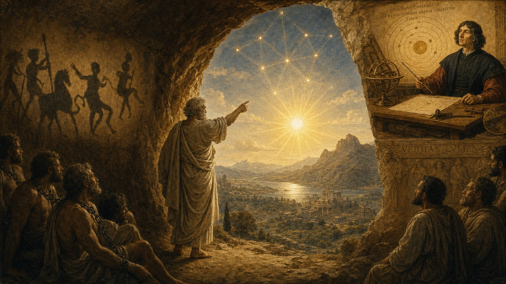

From the Cave to the Sun, from the Earth to the Orbit, from 4D to 7D
Three steps, twenty-four hundred years, and one movement — on Plato, Copernicus, and why a true breakthrough never stems from new arguments, but from a new perspective.
By Jacobus van Merksteijn · Malta, July 2026

Philosophy has never changed
There is something strange about the human mind. Since Plato wrote his Politeia around 380 BC, we have made countless inventions, fought wars, discovered continents, split atoms, and built machines that think. But the core question of philosophy — what is real, and how do we know that? — has not moved a millimeter in twenty-four centuries.
We read Plato and recognize ourselves. We read Socrates and hear our own doubts. We read Aristoteles and catch ourselves still using his categories. Descartes added an "I think, therefore I am", Kant drew the boundaries of reason, Nietzsche struck the idols with a hammer, and yet: the question has remained the same. What does man really see? And why does he so stubbornly think that the shadow on the wall is the real thing?
This is not because the philosophers have not done their best. It is because philosophy itself is practiced within the cave. Words refer to shadows. Arguments pile up on other arguments. Books comment on books. And the prisoners look at each other and praise the one who names the shadows most sharply.
He who truly wants to leave the cave must do something other than philosophize. He must add a dimension to what he is looking at.
Plato: the first who pointed out the wall
Plato's allegory of the cave, written in the seventh book of the Politeia, is no fairy tale. It is a structural diagnosis of how knowledge works.
Prisoners have been chained in a cave since childhood, with their backs to the entrance. Behind them burns a fire. Between the fire and them runs a wall, and over that wall objects are carried. The shadows of those objects fall on the back wall — and those shadows are the only thing the prisoners have ever seen. They have invented names for them, they discuss their movements, they honor whoever best predicts the sequence.
When one of them is freed and turns around to the fire, it hurts. He is blinded. He wants to return to the wall — to the "understandable reality", as Plato calls it. If he is led outside, into the bright sunlight, he can initially see nothing. Only after a long time does his eye adjust to the light and he recognizes that the shadows he believed in his whole life were merely projections of something much more real.
And then comes the sharpest part of Plato's story, which is often forgotten: the freed man must go back into the cave. He must tell the others. And they will laugh at him, find him less clever than before (for he no longer sees the shadows as sharply), and if he insists, they will want to kill him.
That last part is no literary exaggeration. Plato wrote this after his own teacher Socrates was condemned to death by the Athenian democracy — precisely because he asked too many questions about the shadows.
Plato's message is therefore not: "think better." His message is: **step out, look from another level, and accept that the return will hurt.**
Copernicus: the first who truly shifted the perspective
Nearly two thousand years later, Nicolaus Copernicus did something that was structurally identical to what Plato described — but this time not in an allegory, but with a concrete astronomical model.
Before Copernicus, the geocentric worldview of Ptolemaeus was the standard. The earth stood still, the sun and the planets revolved around it. This model worked. It predicted the positions of the planets with stunning accuracy. But it had a problem: to achieve that accuracy, the astronomers had to introduce epicycles — circles within circles, auxiliary loops upon auxiliary loops, because the planets sometimes seemed to move backwards in the sky. Every new measurement required a new correction. The structure became increasingly complex.
Copernicus did something radical in 1543. He discovered no new planet. He found no new formula. He viewed **the same data from a different center**. If you place the sun at the center and the earth as one of the planets revolving around it, the epicycles disappear by themselves. The apparent backward motion of Mars is no longer a mystery — it is simply what you see when a faster inner planet overtakes a slower outer planet.
The epicycles were not wrong in their predictions. They were superfluous once you shifted the perspective.
What Copernicus did is exactly what Plato describes in the cave. The astronomers before 1543 were the prisoners who described the shadows on the wall with ever more refined language. Copernicus turned around and saw the fire. And from that moment on, returning to the old model became as impossible as returning to the belief that shadows are real.
Note: the measurements did not change. The sky continued to do what the sky did. What changed was the coordinate system.
7D: the same movement, one layer deeper
Today in 2026, we find ourselves once again in an epicycle crisis. Modern physics works brilliantly — until it no longer does. And where it fails, we apply patches:
- Dark matter — a particle that supposedly forms 85 percent of all matter, for which we have searched for sixty years, and which we have never found.
- Dark energy — a force that supposedly makes up 68 percent of the universe, without a known mechanism or cause.
- Cosmological constant — a number we insert to make the equation consistent, without knowing why it has that value.
- Singularities in black holes — points of infinite density where the laws of physics "break down", which almost always means that the theory itself is incomplete, not that nature is infinite.
- Sixty years of fusion research — billions invested in machines that must reach a hundred million degrees to break the Coulomb barrier, and still no commercial energy generation.
These are our modern epicycles. They work — in the sense that they fit somewhat within the existing data — but they are complicated, unprovable, and unsatisfying. Anyone who criticizes them is considered someone who "does not understand science." Exactly as the Ptolemaic astronomers undoubtedly thought of everyone who asked why so many epicycles were needed.
The 7-dimensional framework does what Copernicus did. It adds no exotic particles, no new forces, no untraceable fields. It adds three dimensions to the coordinate system in which we describe reality:
- G — size / scale acceleration. Determines locally how fast things grow or shrink. Mass is not fundamental, mass is *proportional to G*. The speed of light is not universal, it depends on *G*. Where G passes through zero and becomes negative, the direction of time reverses and electromagnetic forces flip — which means that the Coulomb barrier does not need to be overcome, but reversed.
- W — value. An axis from antimatter to matter. Things with a different W-value than ours are invisible to us but do exert gravitational force — what we call "dark matter" is ordinary matter at a different W-position. But W reaches further: in living systems, W becomes a measure of coherence, quality, and whether something contributes to life or to decay. W is the bridge between physics and ethics.
- N — plurality. An index for multiple universes. Each black hole is not a dead end but a universe. Our universe originated from the interior of a black hole at a higher level. The "Big Bang" was our birth within something larger.
What standard physics describes with three separate inventions (dark matter, dark energy, singularity), the 7D model describes with a single geometric expansion. We have, to extend the metaphor, placed the sun at the center.
For those who want to verify it technically, the full framework — with the metric tensor, the definition of G, the emergent quantities — is on 7-dim.com. For those who do not want it technically, there is Plato. To each their own. But the movement is the same.
What we can learn when we step into a new dimension
As soon as you add a dimension to how you look, everything changes.
Problems become simpler, not more complicated. This is the paradoxical characteristic of a successful shift in perspective. Copernicus' model was simpler than that of Ptolemaeus. The 7D-model is simpler than standard cosmology with its patches and constants. When reality begins to seem too complicated, it is usually a sign that you are looking from too low a dimension.
Apparent contradictions dissolve. In a 2D economy, growth and sustainability compete. In 3D politics, freedom and security compete. In 4D physics, general relativity and quantum mechanics compete. As soon as you add enough dimensions, the contradictions turn out not to be contradictions — they were projections of the same object onto screens that were too small.
What is valuable finds a place. In current science, "value" has no home. Ethics floats somewhere between psychology and culture, without foundation. As soon as you introduce a W-dimension, value is no longer an opinion — it becomes geometry. A society moving toward higher W is literally, in coordinates, in the same direction as matter organizing itself into life. That is not metaphor. That is geometry.
AI finds its place without humans becoming obsolete. Artificial intelligence is extremely powerful in dimensions 1 through 4: space, time, data, pattern. But it has no G-perspective (scale and context), no W-perspective (value and coherence), and no N-perspective (alternative possibilities). One who sees AI as a competitor to humans thinks in 4D. One who sees AI as an enhancement of humans in the dimensions it masters, while humans provide direction in the dimensions it cannot perceive, thinks in 7D. The danger is not AI. The danger is a society that hands over its W-dimension to a system that has none.
Human connection gains geometry. Why does a room full of hostile people feel different than a room full of friends, even before a word has been spoken? In 4D, that is "biochemistry". In 7D, it is resonance: two configurations aligning across multiple dimensions simultaneously. Respect is then no longer a social agreement, but the recognition of someone's full dimensional existence. A society that reduces people to a single dimension — money, productivity, status — literally shrinks their reality.
But we must actually DO it
And here comes the point where most philosophy fails. Plato wrote down his dialogues, and two thousand four hundred years later we are still reading them — and still sitting in the same cave. Copernicus published his model, and it took more than a century before it was truly accepted. Galileo was summoned before the inquisition. Bruno was burned.
Therefore, thinking alone is not enough. Thinking without acting is a prisoner who turns around in silence, sees the sun for one moment, and then returns to the wall because it is warmer there. The perspective changes nothing in the world if it is not **converted into motion**.
What is doing, in this context? Doing means:
- Using the 7D language in conversations, in writings, in decisions — even if others do not understand what you are talking about. Every time you replace "dark matter" with "matter with a different W-value", every time you replace "GDP" with "movement along the W-axis", you shift the collective frame of reference a little bit.
- Building concrete proposals that make no sense within 4D thinking but become perfectly logical in 7D. Fusion via locally negative G. Economy that measures coherence instead of transaction volume. Education that teaches children to think in coordinates instead of subjects. Governance that explicitly optimizes across multiple dimensions simultaneously instead of maximizing one — as elaborated in [Nova Democratia](https://novademocratia.com), where ten VMP core fields are measured and steered simultaneously instead of the one-dimensional struggle for seats and power positions that dominates current party politics.
- Enduring the pain of not being understood. Of being known as "eccentric". Of colleagues staring blankly, of publishers rejecting, of institutions setting aside your application. That is not proof that you are wrong. That is proof that you are doing exactly what Plato described.
- Not denying the cave. Anyone who acts as if the prisoners are "just stupid" has understood nothing of Plato. They are not stupid. They are chained. Their chains are not made of iron but of habit, upbringing, media, education, fear. The liberated man does not reproach the prisoners for their chains — he tries to make the chains visible.
For the technically interested reader, the framework is at 7-dim.com, with formulas, metric tensor, and applications. For those who prefer to start with human history, there is Plato — the Politeia is still available in every bookstore, in every language. For the physicist, there is Copernicus. For the administrator, Plato's Laws. For the child, the story of the goldfish in the bowl.
**To each their own entrance. But no one remains in the cave once they have stood up.**
Philosophy has not changed in two thousand four hundred years, because philosophy cannot change itself. What changes is not what we think, but from which dimension we look. Plato showed the wall. Copernicus showed the sun. The 7D framework shows three dimensions that were always hidden in the data.
The rest is up to us. And "up to us" is not a philosophical statement. It is a command.
Sources and further reading
- Plato, Politeia (The Republic), Book VII, 514A—520A — [the allegory of the cave](https://nl.wikipedia.org/wiki/Allegorie_van_de_grot)
- Nicolaus Copernicus, De revolutionibus orbium coelestium (1543) — [the heliocentric model](https://nl.wikipedia.org/wiki/De_revolutionibus_orbium_coelestium)
- Jacobus van Merksteijn, The 7-Dimensional Framework — 7-dim.com
- For the political application of 7D thinking to governance: *Nova Democratia — Democracy 2.0* — novademocratia.com
- Additional: Plato's Meno (on anamnesis and memory), Timaeus (on cosmology and mathematical proportions), and Laws (on the achievable instead of the ideal state)
*From the wall to the fire, from the fire to the sun, from the sun back into the cave — not to stay there, but to take others outside with you.*

Jacobus van Merksteijn
Malta
Publisher of Het Open Vizier. Systems thinker on climate, energy and democracy.